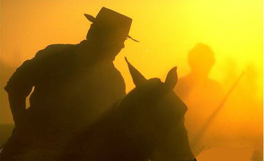

COMIDA
Entre as refeições oferecidas pela Tertúlia, está o ovelha assada, o churrasco de carne de gabo e o porco assado. Para complementar o cardápio é servido um buffet com saladas diversas e acompanhamentos.